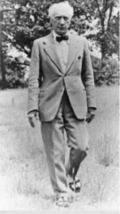

David Moore 教師簡介
於 1999 年創辦澳洲墨爾本亞歷山大技巧學校（School for F.M. Alexander Studies），目前為該校校長。他同時也是澳洲瑜珈協會（Yoga Australia）註冊資深教師以及瑜珈師資培訓師。
在學習亞歷山大技巧之前，David 已修習瑜珈多年，曾旅居印度和泰國七年多的時間，其中包括在泰國禪修寺院修行兩年多，以及在清奈 Krishnamacharya 瑜珈中心隨 TKV Desikachar 學習兩年。1991 年至 1994 年間，他在雪梨跟隨馬丁・傑克遜（Martin Jackson）學習艾揚格瑜珈（Iyengar yoga）長達四年，並於 1994 年參加馬丁舉辦的師資培訓課程。
身為澳洲瑜珈協會的資深註冊教師，David 專門教授將亞歷山大技巧應用於瑜珈的課程，同時也是《聰明瑜珈：應用亞歷山大技巧提升練習、預防受傷並增進身體覺察》（Smart Yoga: Apply the Alexander Technique to Enhance Your Practice, Prevent Injury, and Increase Body Awareness）一書的作者。
課程時間表
| 時間 | 8/20 (四) | 8/21 (五) | 8/22 (六) | 8/23 (日) | 8/24 (一) | 8/25 (二) |
|---|---|---|---|---|---|---|
| 09:30 | 12:30 |
Foot Workshop |
Moving with ease |
Strong bones, flexible body |
Smart Yoga (全日) |
Private lesson |
Trainee Workshop |
| 14:00 | 17:00 |
Private Lesson |
Trainee Workshop |
Trainee Workshop |
Smart Yoga (全日) |
Private lesson |
Private lesson |
| 19:00 | 21:00 |
Private lesson |
Private lesson |
Private lesson |
Private lesson |
工作坊介紹
強健骨骼
靈活身體
8/22 (六)
強健骨骼，靈活身體
Strong Bones, Flexible Body
本工作坊將聚焦於各種活動中的身體協調能力，特別是那些同時需要力量與靈活度的日常活動。
即使是最平常的日常動作，也可能改善或損害我們的身體協調與整體福祉。
輕鬆自在
地動
8/21 (五)
輕鬆自在地動
Moving with Ease
把亞歷山大技巧應用到更廣泛的活動之中，協助參與者將課程中學到的原則帶入日常生活與各種動作情境。
透過實際體驗與探索，你將學習如何：
- 以較少的努力完成更多事情
- 減少不必要的肌肉緊張
- 改善平衡與協調
- 提升動作的舒適度與效率
- 在日常活動中發展更自在、更輕鬆的動作品質。
課程將幫助參與者把亞歷山大技巧從課堂練習延伸到真實生活中的各種活動與挑戰。
足部工作坊
8/20 (四)
足部工作坊
Foot Workshop
在此工作坊中，我們將觀察並體驗日常走路模式，了解這些習慣如何深刻影響重力經由足部傳導至全身，以及這些影響可能帶來的正面或負面結果。
也會探討改善足部功能問題的其他方法，包括足弓塌陷 (扁平足) 與拇趾外翻等狀況。
透過亞歷山大技巧的原則，進一步理解全身平衡與協調如何直接影響足部的功能與健康。
Smart Yoga
8/23 (日)
Smart Yoga
將亞歷山大技巧應用於瑜珈
運用亞歷山大技巧提升瑜珈的練習品質、預防受傷，以身體覺察為基礎的瑜珈練習方式。
課程重點在於學習如何根據每位參與者不同的身體條件與需求，選擇並調整適合自己的瑜珈姿勢：
- 提升身體覺察能力
- 改善動作品質
- 減少不必要的緊張與代償
- 降低受傷風險
- 發展更有效率的瑜珈練習方式
費用與優惠
Smart Yoga
全日課程
其他 Workshop
半日課程 (每項)
Private Lesson
個別課 (50分鐘)
* 如需翻譯請另洽主辦單位
0988-253827
🎁 報名優惠
- 四項工作坊全報優惠：
報名 Foot + Moving with ease + Strong bones + Smart Yoga，總價折抵 800 元。 - 師訓生專屬優惠：
三項 Trainee workshop 全報優惠折抵 500 元。 - 🐤 早鳥優惠：
6/30 前報名，每項工作坊可再折抵 400 元。
【範例】四項工作坊全報 + 早鳥 = 原價17,600 - 全報優惠800 - 早鳥(400*4) = 15,200 元
⚠️ 補充注意事項
- 翻譯說明： 工作坊都會有老師在旁翻譯；個別課 (Private lesson) 才會需要另外付費翻譯。
- 師訓課程： Trainee workshop 是給師訓生和畢業生參加的，請師訓生儘量要參加此課程。因課程內容設計，故未開放給非師訓生和非亞技老師。

"People do not decide their futures, they decide their habits and their habits decide their futures."— F. Matthias Alexander
「人們無法決定自己的未來，他們決定的是自己的習慣，而習慣決定了他們的未來。」